Me, Me, Me…
Welcome to a little insight to my world…
And this is where I should begin. At the beginning of my time…
OK, just, picture it – it was the summer of ’65, the sun had to have been shining because it was about to happen, me, I made my grand entrance into the world at Maesteg General Hospital.
Truely, a beautiful bundle of joy. Put on this planet and wrapped in a blanket, one job, to keep my older sister company.
From a glamorous beginning
My first home was a wooden bungalow in Tredegar, I have some vague memories of that, and then a move to Sarn for a couple of years.
But my real life story? That kicked off in Llangeinor.
From the age of five ’til I joined the Army at sixteen—that’s where it all happened. That village shaped me, broke me and built me back up.
Way back then it was a proper childhood. Bikes with no brakes, bruised and bloodied knees, strange orange mud and a swimming pool within a stones throw of my house.
Everyone of my generation who grew up in the Valleys will know exactly the sort of chaos I’m talking about.
The big bang.
Well that is when all life began, and so it did for me too…
Me and my sister Susan
Llangeinor School
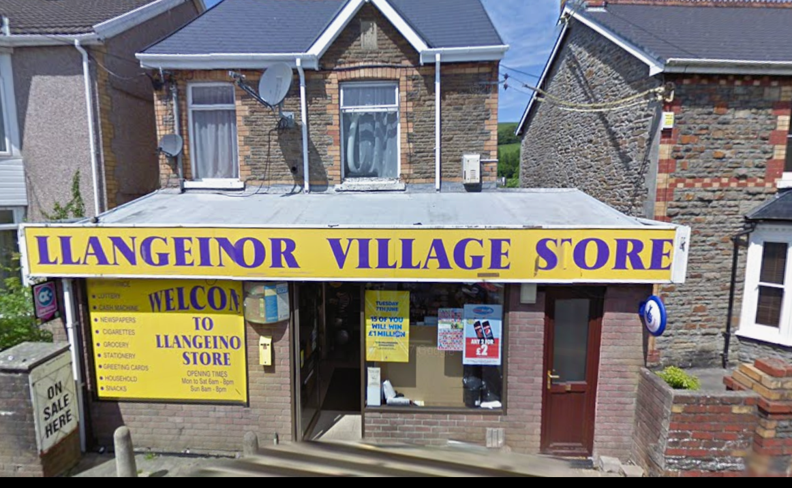
The old house
My bikes…
And so we move into my world of transport. I’ll try and add a story or two relating to the bikes I’ve owned and also a couple of insights into what I was up to during that time.
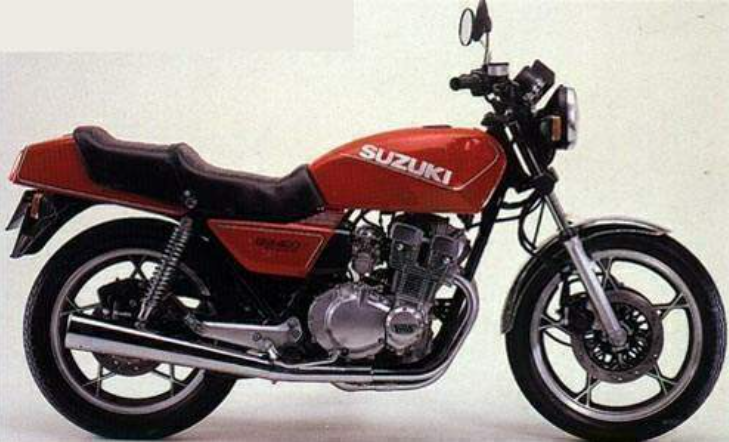
Suzuki GS400E
Bought new from Two Wheel Services, got a couple £ off due to dent in the tank
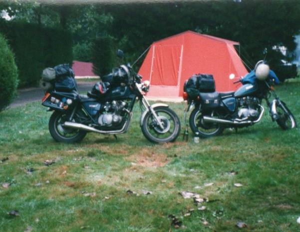
Suzuki GS550L
Joining the big boys on my in-line four, shame it was only a 550cc though. Nice cruiser copy
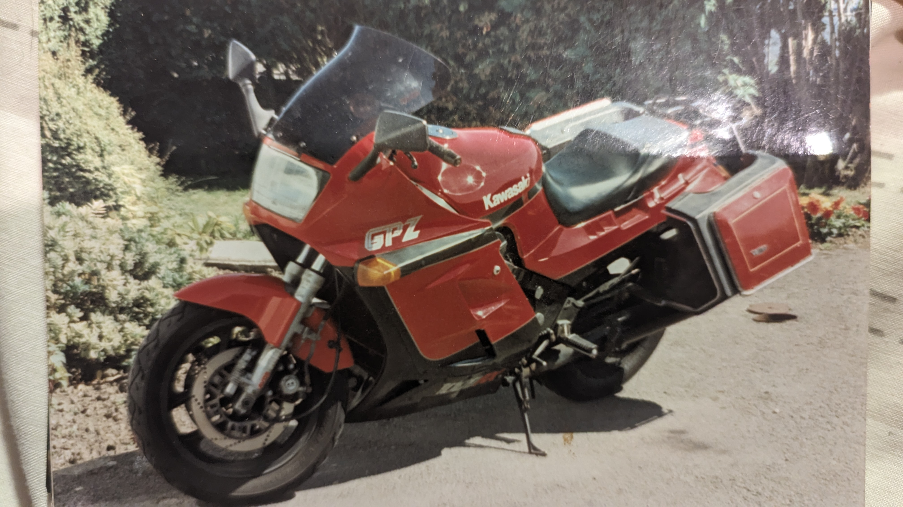
Kawasaki GPz1000RX
Now we’re talking, absolute rocket ship, probably a snail by today’s standards, 150mph top speed though
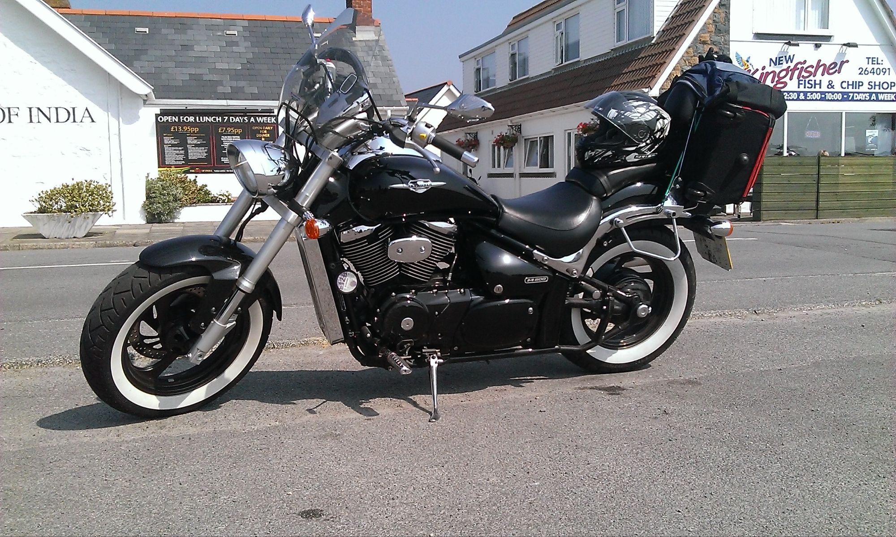
Suzuki 800 Intruder
The path back into biking after about 12 years off, I always vowed to never get a V-Twin but here’s one
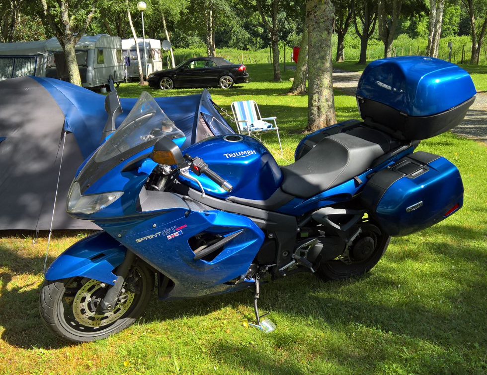
Triumph 1050 Sprint GT
I stepped into the world of Triumph. lovely 3 cylinder mile muncher, bit painful on my wrists after a while though
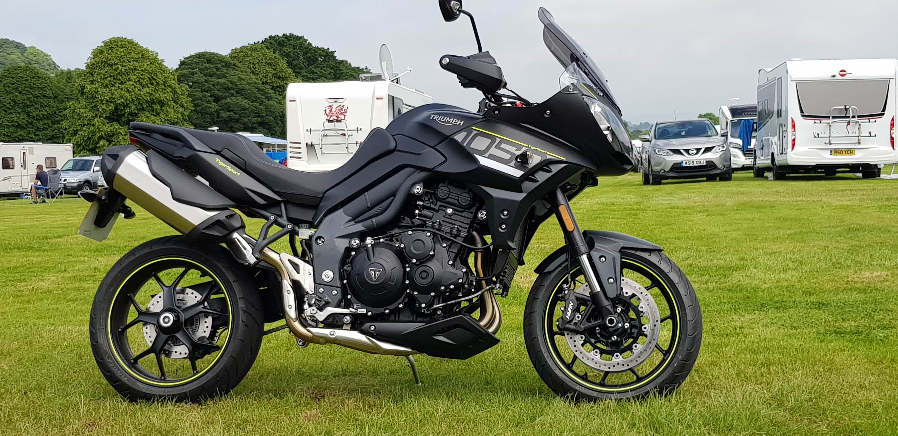
Triumph Tiger 1050 Sport
Same engine as the GT but far more comfortable, nice upright seating position, starting problems when hot
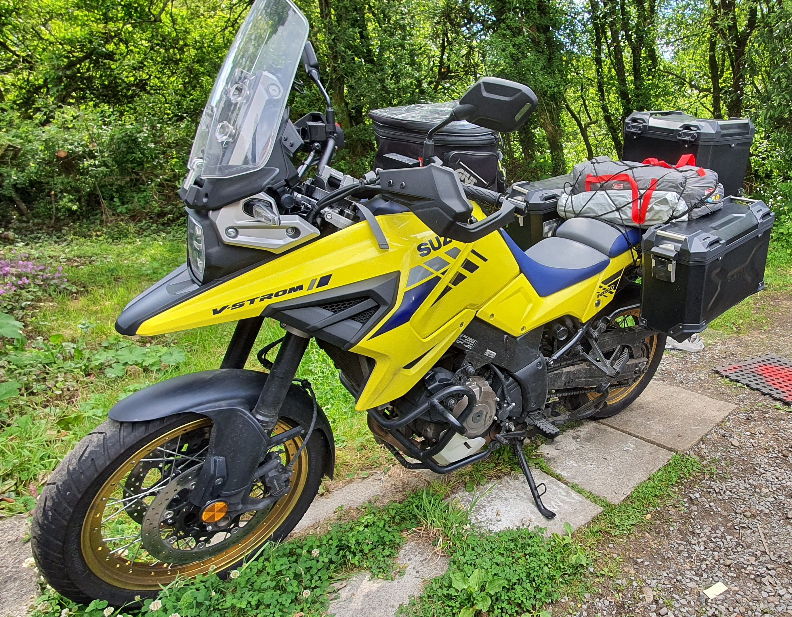
Suzuki V-Strom 1050
Back onto a V-Twin, lovely cruiser with all the luggage as standard on this model, really comfortable on my trips to France
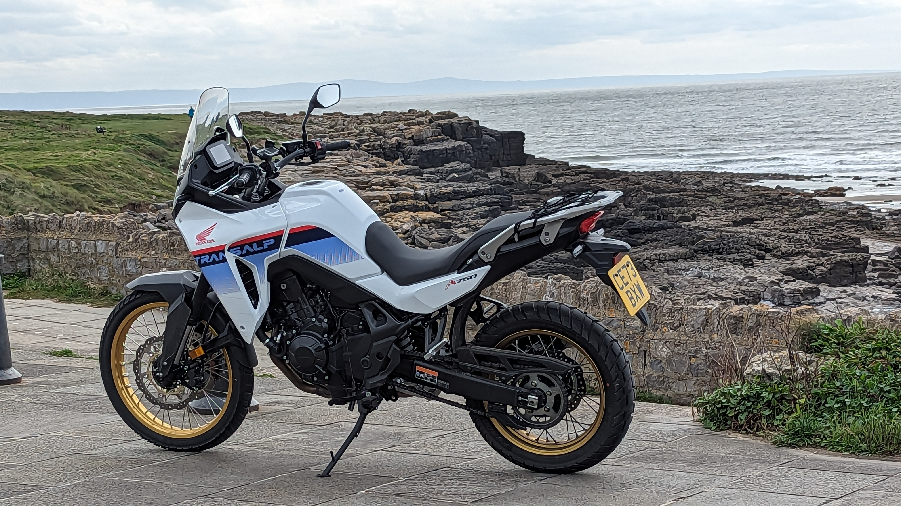
Honda XL 750 Transalp
This was my token effort to reduce the size of the bikes I was buying, well it is smaller in engine capacity, just as big overall but again, really comfortable for those French trips
I wonder what’s next?
What might be the next bike in the Danter garage? A BMW? Another Suzuki? Or something else? Well I’ve bought one, details to follow soon(it’s a Suzuki)
My jobs…
I haven’t had many in my short life, just the four
My cars…
Welcome to my world of cars. I’ll try and add a story relating to the car and also a couple of insights into what I was doing during my ownership of that car.
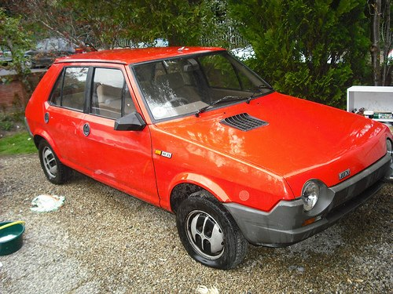
Fiat Strada 65cl
Mine was silver, I do have a photo of the rust bucket somewhere
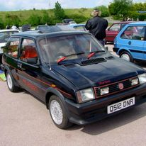
MG Metro Turbo
Really fast car given it’s tiny engine, no need to slow down round corners
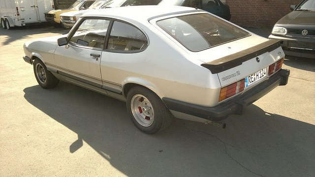
Ford Capri 2.0L
Not the greatest handling car but good on the motorway
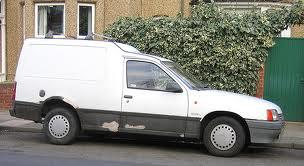
Bedford AstraMax 1.6D
I had a couple of these as company vans, the biggest issue was getting up hills without changing down
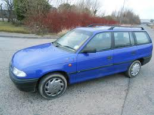
Vauxhall Astra 1.7D
I think I had 4 of these, from the 1.7d to the 2.0d, lovely car, must have driven about 500,000+ miles altogether in these

Nissan Primera
Did I have one of these? So bland and boring I hardly remember it. Nice stereo I think, I remember playing music loud

Hyundai Santa Fe 2.0D
One of the first in Britain, I covered 150,000 miles in 3 years, great drive, got out feeling fresh

Nissan 280ZX
Spent more time fixing it than driving it. The engine finally gave up on the way to Gloucestershire to get Liam

Renault Laguna 2.0D
I had all the bells and whistles on this one, shame the mileage was so high when I bought it

Citroen C5 3.0D
A proper car, I think I owned this one for 10 years at least.
Towed the caravan traveled everywhere, lovely..
Reviews
Tom S.
“Steve is a genius, how he remembers all this stuff is beyond me.”
Liz S.
“I wish Steve had hung around and married me.”
Mike A.
“Haven’t met Steve but can tell he is a really likeable guy.”
Designed with WordPress